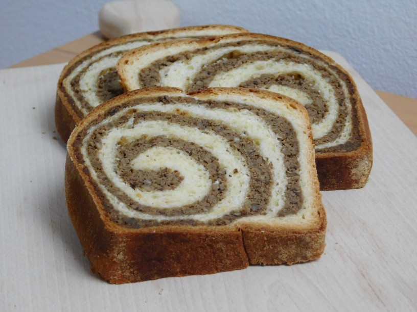

Potica Recipe

Description
This is a wonderful bread from Slovenia with a sweet, nutty filling.
Due to the spelling and pronunciation (paw-tee'-tzah) it's very hard
to find the recipe.
Ingredients
- 1½ teaspoons active dry yeast
- ¼ cup white sugar
- ¼ cup milk, lukewarm
- 1 cup butter, softened
- 6 egg yolks
- 1⅓ cups milk
- 5 cups all-purpose flour
- 1 teaspoon salt
- 1 cup butter, melted
- 1 cup honey
- 1½ cups raisins
- 1½ cups chopped walnuts
- 1 tablespoon ground cinnamon
Steps
-
In a small mixing bowl, dissolve yeast, 1 teaspoon sugar, and 3
tablespoons of the flour in warm milk. Mix well, and let stand
until creamy, about 10 minutes.
-
In a large mixing bowl cream the butter with the remaining sugar.
Add the egg yolks one at a time, beating well after each addition.
Add the yeast mixture, remaining milk, 4 cups of flour and the salt;
mix well. Add the remaining flour, 1/2 cup at a time, stirring
well after each addition. When the dough has pulled together, turn
it out onto a lightly floured surface and knead until smooth and
elastic, about 8 minutes. Lightly oil a large bowl, place the
dough in the bowl and turn to coat with oil. Cover with a damp
cloth and let rise in a warm place until doubled in volume, about
1 hour.
-
Lightly grease one or two cookie sheets. Deflate the dough and
turn it out onto a lightly floured surface. Divide the dough into
two equal pieces and roll Out to 1/4 to 1/2 inch thickness. Spread
each piece with melted butter, honey, raisins, walnuts and cinnamon.
Roll each piece up like a jelly roll and pinch the ends. Place
seam side down onto the prepared baking sheets. Let rise until
double in volume. Preheat oven to 350 degrees F (175 degrees C).
-
Bake at 350 degrees F (175 degrees C) for about 60 minutes or
until the top is golden brown.